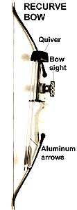

Bowhunting Gear
Making sure you have the proper bowhunting equipment, including bows, arm guard, shooting glove, arrows and arrowheads, accessories.
By David Petersen
November/December 1987
Going after your winter's meat the good old hard way.
By David Petersen
This little fawn obviously was an orphan. I'd been crossing paths with him for a couple of weekends, he sometimes feeding so near my hiding place that I had to wonder if I couldn't reach out and touch him. And never once had he been with a doe, even though this strip of pinon and juniper woods was jumping with mule deer. Ma or no, I figured, the fawn would probably make it through the coming winter, this being prime river bottom habitat-sheltered from cold winds and snow, rich in browse.
But lordy, was he ever naive. In order to survive to adulthood he'd have to learn a few things about lurking danger and its avoidance. I determined to be his teacher. It was early morning and there I was again, rumped down on a log in my makeshift ground blind in the pinon and juniper, peering through a low screen of cut sage arranged in an arc in front of me. My back was pressed into a clump of mountain mahogany. Just after daylight two does materialized and began feeding toward me, cautious, one's head always up and watching while the other dipped for a nip of green. Go in peace, ladies. By and by came a third doe, this one with a fawn. It was midmorning before the orphan finally came poking along, unwary as always. When I saw that he wasn't going to wander quite close enough to touch hand to fur, I jumped up, reached out and swatted his rump with the tip of my bow. He leaped straight up and landed with his little legs pumping. In seconds he was gone. "In future," I whispered after him, "what say let's be a bit more watchful?" I spent the rest of the morning sitting like a bump on my log waiting for a buck that never showed. At noon I walked out to my truck and drove home.
It had been another good morning's bowhunt. I didn't bag my winter's wild meat, but I did sit for six quiet hours observing nature. Camouflaged to dissolve into my surroundings, I felt, and was, almost invisible. I had watched undetected as several deer fed nearby, even counting coup on a small. orphaned one of their number. I had watched a swarm of crows harass a great horned owl trying for a nap in a cottonwood snag close by, the owl remaining insouciant through it all. I had chuckled at a chipmunk's frantic gyrations and marked the ponderous progress of a box turtle across the sandy soil. Before daylight and for what seemed a long while after, I had shivered in the night's leftover cold, waiting for a lazy autumn sun to wake to its task and warm my painted face. It had been a good morning's bowhunt.
The following weekend I was out there again in the pinon and juniper when a nice buck stepped clear of a chokecherry bush on which he'd been breakfasting a few yards in front of my blind. Before field-dressing my kill I took a moment to humble myself before nature and wonder at the harsh beauty of her workings, of which I acknowledge being a natural part. No rude rifle crack had shattered the tranquility of the woods, my prey had lived a clean free life and died fair and fast, and I took home a supply of healthful lean meat earned honestly . . . the good old hard way. Yet another good day's bowhunt, though no more memorable than the day a week before when I had spanked a wild deer with my bow.
Which is about all I have to say about why I bowhunt. If you've ever thought you'd rather pursue game with a bow and arrows than with a gun (or not at all), I'd like to offer encouragement and advice-advice based on a quarter century of enjoyed experience. In the following paragraphs I'll try to help you through the most potentially confusing aspect of getting started with bow and arrows-gearing up. Bows PHOTOGRAPHS © MICHAEL SOLURI
Of basic designs in bows there are but three: longbow, recurve and compound. The longbow is a venerable weapon and deadly in the hands of an expert such as past master Howard Hill. But the longbow is a poor choice for the beginner. With an average length of nearly six feet, such a weapon is clumsy under the best of conditions and all but impossible to maneuver in tight quarters, such as a ground blind or tree stand. Longbows also launch arrows at low velocity, which means a high-arcing flight trajectory that works against accuracy. Choosing to hunt with a bow rather than a gun is sufficient handicap in itself; my advice is to perfect your skills before experimenting with this purists' tool.
The recurved bow, also an ancient weapon, is decidedly superior to the longbow in design technology. With its laminated limbs and forward-turned tips, the recurve is capable of delivering substantially more velocity to arrows, and doing so with a foot less length. It's a streamlined, lightweight, reliable weapon and the favorite of many old-line bowhunters. Archery equipment manufacturer Fred Bear, for a prime example, has taken virtually every big-game animal in the accessible world with a recurve. I killed my first deer with a little Ben Pearson recurve back in 1965 and still prefer recurves today.
|
PHOTOGRAPHS ? MICHAEL SOLURI Darrell Pace, two-time gold medalist for the U.S. Olympic archery team and enthusiastic bowhunter, draws on a practice target. |
 Judo point Broadhead Target point |
|
|
|
|
|
 |
|
|